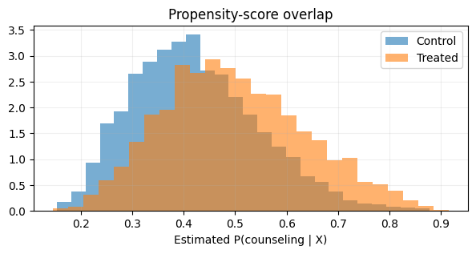
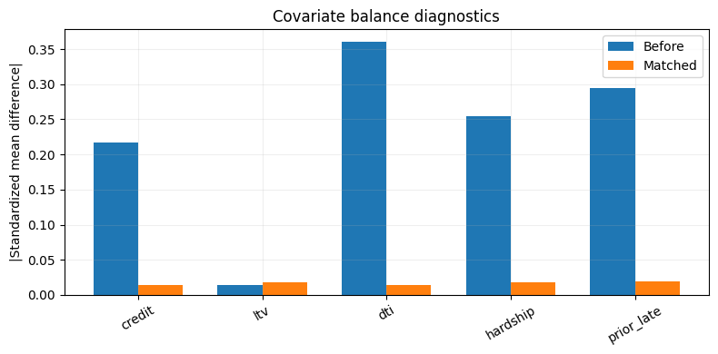
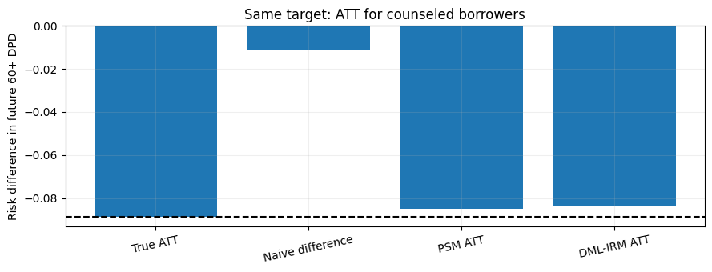

import numpy as np
import pandas as pd
import matplotlib.pyplot as plt
from sklearn.model_selection import train_test_split
SEED = 42
rng = np.random.default_rng(SEED)
plt.rcParams.update({'figure.figsize': (8, 4), 'axes.grid': True, 'grid.alpha': 0.2})Project 12 · Propensity Score Matching vs Double ML: Mortgage Counseling
Track: Causal Inference / Double ML
Research / product question: Does counseling reduce future 60+ DPD among borrowers who sought or received counseling?
Learning outcome: Selection bias, overlap, matching with replacement, cross-fitted AIPW/IRM ATT, hyperparameter choice and DGP sensitivity.
Workflow: Data-generating process → raw-data audit → leakage-safe features → from-scratch baseline → model selection / hyperparameter tuning → held-out evaluation → failure analysis.
Synthetic-data disclosure: All records and outcomes are created in this notebook; they do not describe real customers or credit decisions. Ground truth is constructed for teaching. Numerical results are illustrative of this simulator, not estimates of real-world business impact.
Reproducibility: Random seeds are fixed. Run cells top-to-bottom. Install packages from the project-level requirements.txt. CPU execution is supported; deep-learning examples deliberately use small models.
Portfolio standard: fully reproducible, synthetic educational data · explicit evaluation protocol · plots and failure analysis · no claims of production accuracy.
The target is ATT, a difference in future delinquency probability among recipients of counseling. Compare propensity matching and cross-fitted orthogonal DML-IRM using the same treatment definition and target.
1. Simulate potential outcomes and nonrandom counseling
We generate both potential outcomes probabilities and an individual treatment effect. The observed Y is realized from the assigned intervention. All confounders are available in this idealized primary DGP.
# Observe both the selection mechanism and potential outcome mechanism in simulation.
from scipy.special import expit
from scipy.stats import norm
from sklearn.linear_model import LogisticRegression
from sklearn.ensemble import HistGradientBoostingRegressor,HistGradientBoostingClassifier
from sklearn.model_selection import StratifiedKFold
from sklearn.neighbors import NearestNeighbors
from sklearn.metrics import roc_auc_score
n=9000
credit=np.clip(rng.normal(695,70,n),480,845);ltv=np.clip(rng.normal(.79,.12,n),.45,1.08)
dti=np.clip(rng.normal(.36,.12,n),.08,.78);hardship=rng.binomial(1,.25,n)
prior_late=rng.binomial(1,expit(-2+.75*hardship+1.2*(ltv-.8)))
X=pd.DataFrame({'credit':credit,'ltv':ltv,'dti':dti,'hardship':hardship,'prior_late':prior_late})
# Selection depends on both observed risk and potential outcomes: confounding by indication.
e=expit(-.50+.55*hardship+.75*prior_late+.4*(dti-.35)/.12-.25*(credit-700)/75)
D=rng.binomial(1,e)
mu0=expit(-2.35+1.1*hardship+.85*prior_late+.6*(dti-.35)/.12-.7*(credit-700)/75+.3*(ltv-.8)/.15)
mu1=expit(np.log(mu0/(1-mu0))-.65-.2*hardship)
Y=rng.binomial(1,np.where(D==1,mu1,mu0))
true_sample_att=(mu1-mu0)[D==1].mean()
print('Treatment rate:',round(D.mean(),3),'True treated-population ATT (risk diff):',round(true_sample_att,4))
print('Observed delinquency treated/control:',pd.Series(Y).groupby(D).mean().round(3).to_dict())Treatment rate: 0.458 True treated-population ATT (risk diff): -0.0887
Observed delinquency treated/control: {0: 0.143, 1: 0.132}2. Naive comparison, propensity score and overlap
A simple treated–control comparison is confounded because high-risk borrowers are more likely to receive counseling. The propensity model estimates selection, not the outcome.
# Diagnose confounding and propensity-score overlap.
naive=Y[D==1].mean()-Y[D==0].mean()
ps=LogisticRegression(max_iter=350).fit(X,D);phat=ps.predict_proba(X)[:,1]
print('Naive risk difference',round(naive,4),'Propensity AUC',round(roc_auc_score(D,phat),3))
fig,ax=plt.subplots(figsize=(7,3));ax.hist(phat[D==0],bins=26,alpha=.6,label='Control',density=True);ax.hist(phat[D==1],bins=26,alpha=.6,label='Treated',density=True);ax.legend();ax.set(title='Propensity-score overlap',xlabel='Estimated P(counseling | X)');plt.show()Naive risk difference -0.0111 Propensity AUC 0.657
3. Nearest-neighbor propensity-score matching from scratch
We perform one-to-one nearest-neighbor matching with replacement on the estimated propensity score. This approximates an ATT by contrasting each treated borrower with a similar control. PSM point-estimate CIs require special care and are omitted here.
# Nearest-neighbor PSM compares treated units to reweighted controls.
control_idx=np.where(D==0)[0];treat_idx=np.where(D==1)[0]
nn=NearestNeighbors(n_neighbors=1).fit(phat[control_idx,None]);distance,neighbor=nn.kneighbors(phat[treat_idx,None]);matched_controls=control_idx[neighbor[:,0]]
psm_att=np.mean(Y[treat_idx]-Y[matched_controls])
print('PSM ATT',round(psm_att,4),'True sample ATT',round(true_sample_att,4),'Average propensity distance',round(distance.mean(),4))
def smd(x,idx_a,idx_b):
a=x[idx_a];b=x[idx_b];return (np.mean(a)-np.mean(b))/np.sqrt((np.var(a)+np.var(b))/2)
bal_before={c:abs(smd(X[c].to_numpy(),treat_idx,control_idx)) for c in X}
bal_after={c:abs(smd(X[c].to_numpy(),treat_idx,matched_controls)) for c in X}
plt.bar(np.arange(len(X.columns))-.18,list(bal_before.values()),width=.36,label='Before');plt.bar(np.arange(len(X.columns))+.18,list(bal_after.values()),width=.36,label='Matched');plt.xticks(np.arange(len(X.columns)),X.columns,rotation=30);plt.ylabel('|Standardized mean difference|');plt.title('Covariate balance diagnostics');plt.legend();plt.tight_layout();plt.show()PSM ATT -0.085 True sample ATT -0.0887 Average propensity distance 0.0001
4. Double ML for ATT: nuisance learning + cross-fitting
We use the IRM ATT/ATTE orthogonal score, not a partially linear model intended for a different target. Train nuisance models on other folds only. For this binary outcome, the control regression estimates E[Y(0)|X] using controls; the propensity model estimates P(D=1|X).
# Cross-fit propensity and control-outcome nuisance models for ATT.
from sklearn.model_selection import StratifiedKFold
folds=StratifiedKFold(n_splits=3,shuffle=True,random_state=42)
# Hyperparameter tuning (simple CV on controls) for outcome nuisance m0.
from sklearn.model_selection import KFold
from sklearn.metrics import mean_squared_error
ctrl=np.where(D==0)[0]
options=[10,25]
cv_results=[]
for leaves in options:
errs=[]
for itr,iva in KFold(n_splits=3,shuffle=True,random_state=42).split(ctrl):
train=ctrl[itr];val=ctrl[iva]
reg=HistGradientBoostingRegressor(max_iter=85,max_leaf_nodes=leaves,min_samples_leaf=35,random_state=42).fit(X.iloc[train],Y[train])
errs.append(mean_squared_error(Y[val],reg.predict(X.iloc[val])))
cv_results.append((leaves,np.mean(errs)))
best_leaves=min(cv_results,key=lambda r:r[1])[0]
print('Control-outcome nuisance CV MSE:',cv_results,'selected leaves:',best_leaves)
e_oof=np.empty(n);m0_oof=np.empty(n)
for train,test in folds.split(X,D):
propensity=LogisticRegression(max_iter=400).fit(X.iloc[train],D[train])
controls=train[D[train]==0]
outcome=HistGradientBoostingRegressor(max_iter=85,max_leaf_nodes=best_leaves,min_samples_leaf=35,random_state=42).fit(X.iloc[controls],Y[controls])
e_oof[test]=propensity.predict_proba(X.iloc[test])[:,1]
m0_oof[test]=outcome.predict(X.iloc[test])
e_oof=np.clip(e_oof,.02,.98)
# Orthogonal ATT signal: [D*(Y-m0) - (1-D)*e/(1-e)*(Y-m0)] / E[D]
p_t=D.mean();influence_numerator=D*(Y-m0_oof)-(1-D)*e_oof/(1-e_oof)*(Y-m0_oof)
dml_att=influence_numerator.mean()/p_t
# First-order influence function for ratio estimating equation.
psi=(influence_numerator-dml_att*D)/p_t
se=np.std(psi,ddof=1)/np.sqrt(n);ci=(dml_att-1.96*se,dml_att+1.96*se)
print('Cross-fitted DML-IRM ATT',round(dml_att,4),'95% influence-function CI',tuple(np.round(ci,4)))Control-outcome nuisance CV MSE: [(10, np.float64(0.11148615267344343)), (25, np.float64(0.11674849887284923))] selected leaves: 10
Cross-fitted DML-IRM ATT -0.0837 95% influence-function CI (np.float64(-0.1013), np.float64(-0.066))5. Compare estimators and identify robustness limits
We can compare against the known simulator ATT. Cross-fitting mitigates nuisance overfitting, but is not a cure for unmeasured confounding, missing overlap, or a misspecified estimand.
# Compare against known sample ATT and violate ignorability deliberately.
results={'True ATT':true_sample_att,'Naive difference':naive,'PSM ATT':psm_att,'DML-IRM ATT':dml_att}
print({k:round(v,4) for k,v in results.items()})
fig,ax=plt.subplots(figsize=(9,3.5));ax.bar(list(results),list(results.values()));ax.axhline(true_sample_att,color='black',linestyle='--');ax.set(ylabel='Risk difference in future 60+ DPD',title='Same target: ATT for counseled borrowers');plt.xticks(rotation=12);plt.tight_layout();plt.show()
# Sensitivity demonstration: generate a hidden confounder strongly driving D and untreated risk.
U=rng.binomial(1,.4,n);e2=expit(np.log(e/(1-e))+1.3*U);d2=rng.binomial(1,e2)
mu0_2=expit(np.log(mu0/(1-mu0))+1.2*U);mu1_2=expit(np.log(mu0_2/(1-mu0_2))-.65-.2*hardship)
y2=rng.binomial(1,np.where(d2==1,mu1_2,mu0_2))
print('Hidden-confounder naive estimate:',round(y2[d2==1].mean()-y2[d2==0].mean(),4),'vs true ATT',round((mu1_2-mu0_2)[d2==1].mean(),4)){'True ATT': np.float64(-0.0887), 'Naive difference': np.float64(-0.0111), 'PSM ATT': np.float64(-0.085), 'DML-IRM ATT': np.float64(-0.0837)}
Hidden-confounder naive estimate: 0.0105 vs true ATT -0.1089What the results mean / interview discussion
Both PSM and DML target the treated-population ATT, ensuring a fair comparison. The DML estimator is cross-fitted and uses an orthogonal ATT score; it has no magical protection against U (an unobserved confounder). This simulation uses overlap and conditional exchangeability by construction, which is precisely why estimation can work.
Try explaining these without looking at the code:
- ATE versus ATT: when is each policy-relevant?
- Derive the inverse-propensity adjustment in the ATT score.
- Why does DML use cross-fitting and orthogonality, and what assumptions remain?
Limitations and next step: Evaluate on a suitably licensed real-world dataset or stronger simulation with domain shift, logging bias and realistic selection. Never treat synthetic performance as production evidence.
What this project demonstrates, and what it does not
Next: run repeated Monte Carlo replications to study bias and CI coverage, evaluate effective sample size and overlap trimming, and re-estimate after hiding an important confounder. Double ML does not fix unmeasured confounding.
Reproduce: Run All in Jupyter; no private or uploaded data required. For real data, use leakage-safe train/validation/test partitions and respect each dataset license.